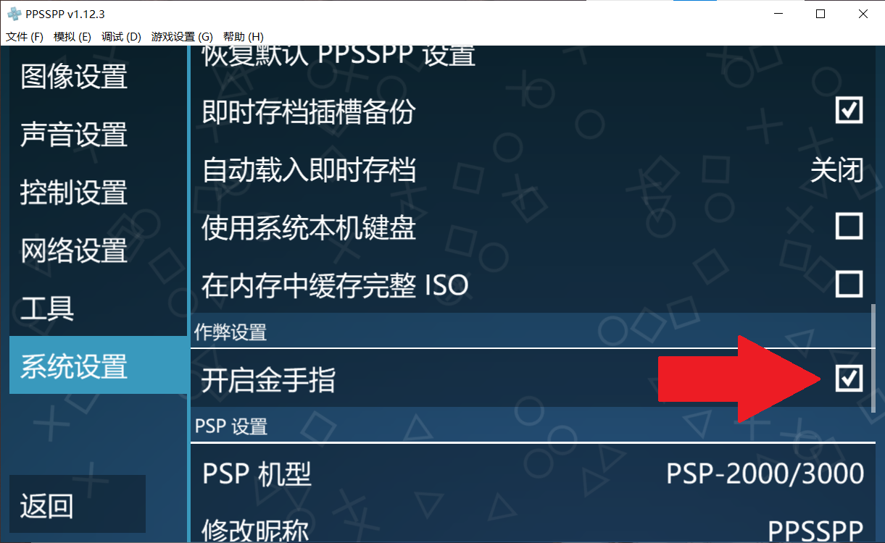
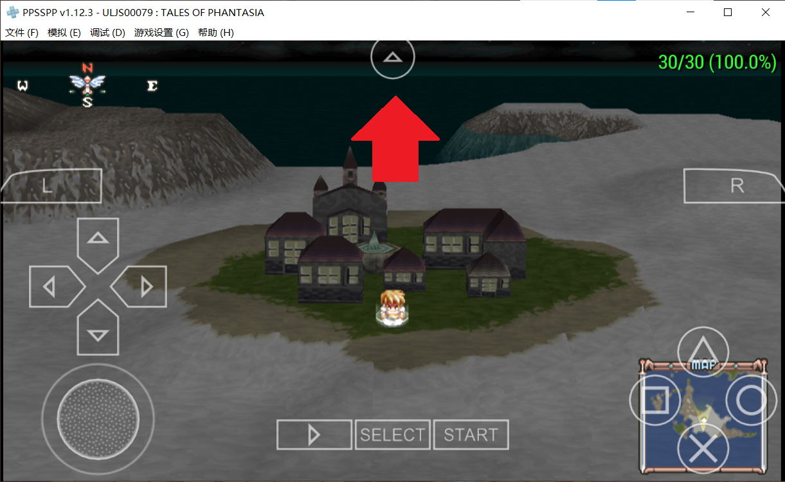
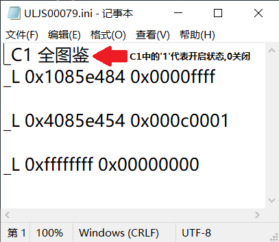

使用方法
打开ppsspp模拟器，游戏设置，系统设置，下滑找到开启金手指。

打开游戏，载入存档，屏幕正上方的三角按钮，金手指，编辑金手指文件。

在弹出的文本框内输入。

_C1 全图鉴
_L 0x1085e484 0x0000ffff
_L 0x4085e454 0x000c0001
_L 0xffffffff 0x00000000
_C1 10x经验值
_L 0x114E8B9C 0x0000FFFF
_C1 金钱
_L 0x2085DE3C 0x0098967F
_C1 遇敌次数
_L 0x2085E4F8 0x0098967F
_C1 全技能
_L 0x2085D978 0x04030201
_L 0x2085D97C 0x0E061005
_L 0x2085D980 0x0F07110C
_L 0x2085D984 0x0A090D08
_L 0x2085D988 0x1413120B
_L 0x4085D98C 0x00040001
_L 0x18171615 0x04040404
_L 0x2085DA18 0x6669635B
_L 0x2085DA1C 0x6760655C
_L 0x2085DA20 0x6C616B5E
_L 0x2085DA24 0x626A645D
_L 0x1085DA28 0x0000685F
_L 0x2085DAB8 0x3B423E37
_L 0x2085DABC 0x383F4346
_L 0x2085DAC0 0x4A473C4C
_L 0x2085DAC4 0x40484439
_L 0x2085DAC8 0x3D3A4945
_L 0x2085DACC 0x4B4D4E41
_L 0x4085DB58 0x00030001
_L 0x5251504F 0x04040404
_L 0x2085DBF8 0x28272625
_L 0x2085DBFC 0x2C2B2A29
_L 0x0085DC00 0x0000002D
_L 0x2085DC98 0x3130322E
_L 0x2085DC9C 0x2F353433
_L 0x0085DCA0 0x00000036
_L 0x2085E494 0xFFFFFFFF
_L 0x2085E498 0xFFFFFFFF
_L 0x2085E49C 0x00FFFFFF
_L 0x4085E4A0 0x00040001
_L 0x01010101 0x00000000
_L 0x1085E4B0 0x00000101
_C1 全人物
_L 0x8085E518 0x00060002
_L 0x00000001 0x00000001
_C1 不遇敌人
_L 0x0085D270 0x00000000
_C1 任意存档
_L 0x0085D55F 0x0000006B
_C1 全料理
_L 0x2085E670 0x01FFFFFF
_C1 称号
_L 0x1085E524 0x0000FFFF
_L 0x1085E528 0x00007F3F
_L 0x1085E52C 0x00007F3F
_L 0x1085E530 0x00007F3F
_L 0x1085E534 0x0000FF3F
_L 0x1085E538 0x00007F3F